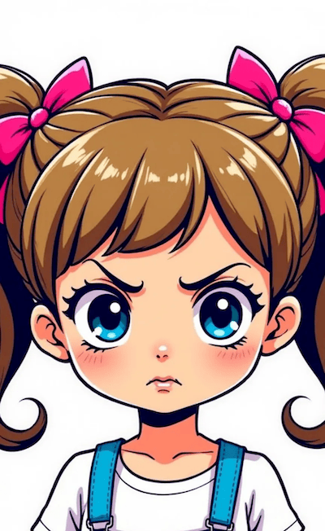

|
|
Quando un fiocco diventa una tragedia 🎀😱
Crescere è un'avventura… ma a volte può trasformarsi in un dramma da Oscar! 🎭
Con Barby Mita, raccontiamo i piccoli (grandi) disastri della crescita, quelli che ogni genitore conosce bene. 😆
👉 Scopri il dramma|  |
🎀 Il Dramma del Fiocco
Un fiocco che cade? 😱 Fine del mondo. Ma tranquilli, tutto si risolve… forse!
Barby Mita è una piccola esploratrice, sempre alla ricerca di nuove avventure. Vuole vestirsi da sola, saltare più in alto, scegliere cosa mangiare… e, soprattutto, essere grande! Ma ogni tanto, le emozioni prendono il sopravvento e basta un piccolo imprevisto – come un fiocco che cade – per trasformare la giornata in una tragedia memorabile. 🎭
Ma chi ha detto che crescere significa non sbagliare mai? Barby Mita scopre che ogni piccolo dramma porta con sé una soluzione inaspettata. A volte si cade, a volte ci si rialza… e a volte si trova un altro fiocco nella tasca. 😉
👉 Scopri cosa è successo!🎶 Basta con Baby Shark! C’è di meglio
Se vuoi musica per bambini che non ti faccia impazzire, sei nel posto giusto! Little Billies crea canzoni intelligenti e divertenti, che piacciono ai piccoli e ai grandi.
🎧 Ascolta l’album completo❤️ Grazie per essere parte della nostra missione!
La musica per bambini può essere migliore. Noi ci proviamo, e tu? 🎵